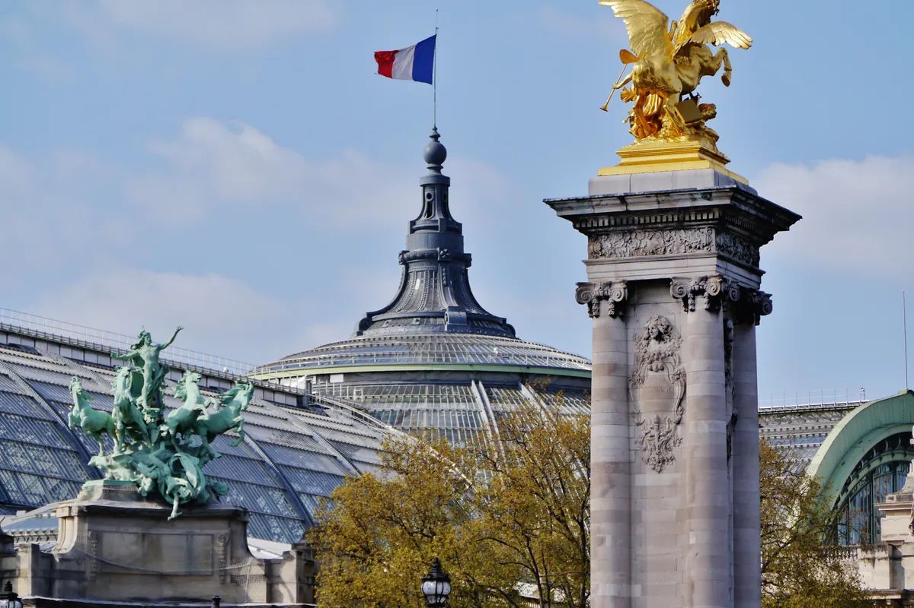
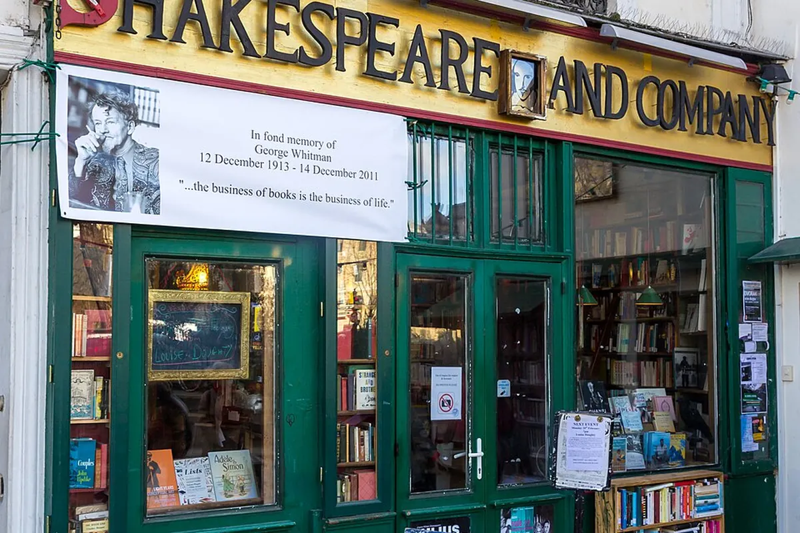
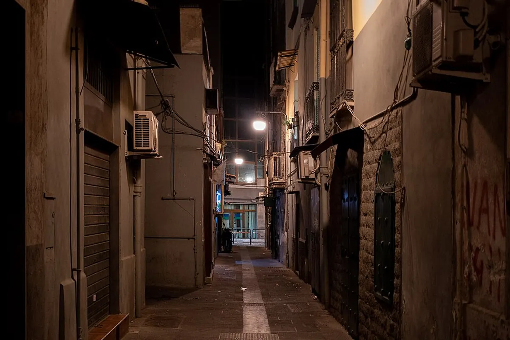

从故乡出发，循着水光与星屑远行
Wandered into Light
我的第一次远行从济南启程，先在马德里落地，再前往西班牙格拉纳达留学。后来每一个寒假、春天与暑假的绕行，都沿着机场、火车站、海边与旧城，把地图慢慢缝成了一本发光的旅行手帐。如今，我已经从格拉纳达来到马德里实习，新的日常也正在这里继续展开。
◌
已收藏的城市与岛屿
0 每一处足迹，都能继续编辑pages of places
旅行日志
按国家、年份与旅程类型归档。每一张卡片都能改名、改色、写日记，并附上照片或短视频。
FILM MEMORY REFERENCE BOARD 法国 · 维也纳 · 布达佩斯 · 那不勒斯 地点与电影记忆的视觉联想，不是官方剧照



a world that remembers
足迹地图
路线按真实旅程顺序连接：济南 → 马德里 → 格拉纳达，再展开每一段假期旅行；最新一段为格拉纳达 → 马德里实习。
正在铺开地图颜料…
sorted like pressed flowers
分类与归档
国家是一册，年份是一枚书签。点击任意标签即可回到对应日志。
“The world is a song, a riot of joy, a wilderness of welcome.”